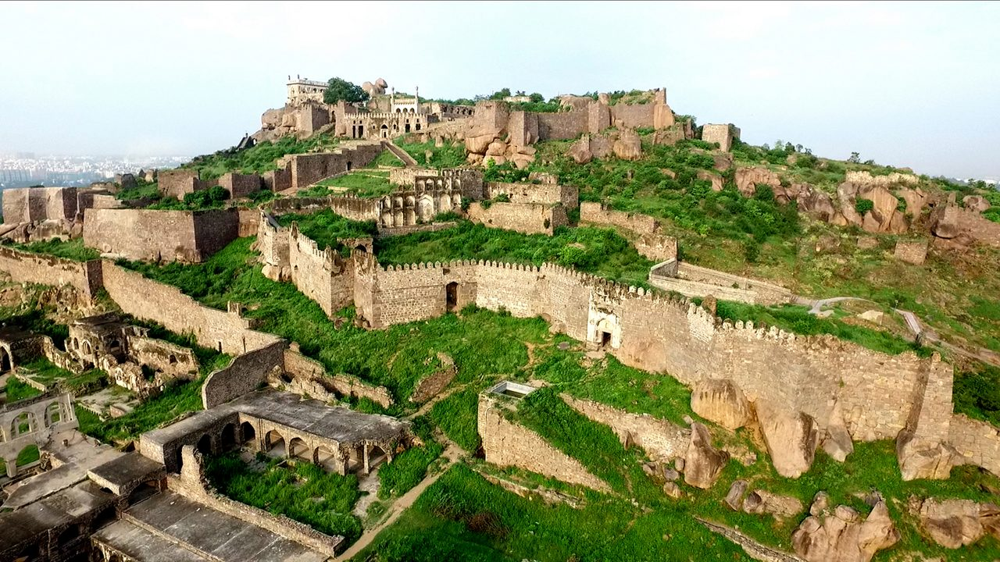
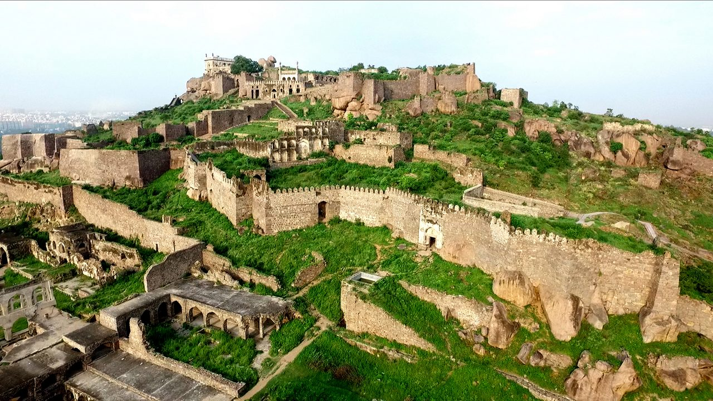

Hyderabad, the capital of Telangana, is a vibrant city known as the "City of Pearls" and famous for the iconic Charminar, a 1591 monument with four grand arches and minarets in the heart of the old city. It is the home of the renowned, aromatic Hyderabadi dum biryani, a culinary masterpiece of rice and meat. The city seamlessly blends rich history with modernity, offering a fascinating, 400-year-old cultural experience. Situated on a 130-meter-high granite hill, the magnificent Golconda Fort is a major attraction known for its impressive, intricate acoustics and commanding panoramic views of the city. As the former capital of the Qutub Shahi kings, this massive fortress is a testament to the region's royal heritage. Visitors often combine a trip to the historic fort with a visit to the bustling Laad Bazaar near Charminar for pearls and traditional lacquer bangles.